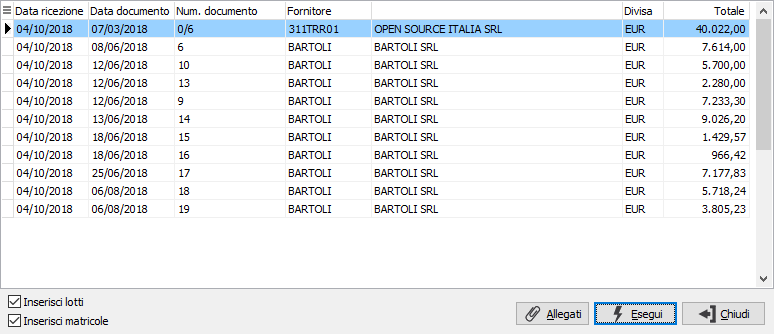
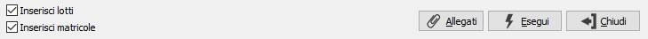
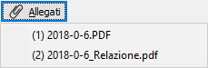
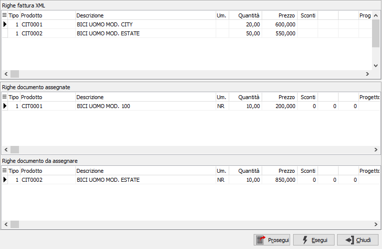
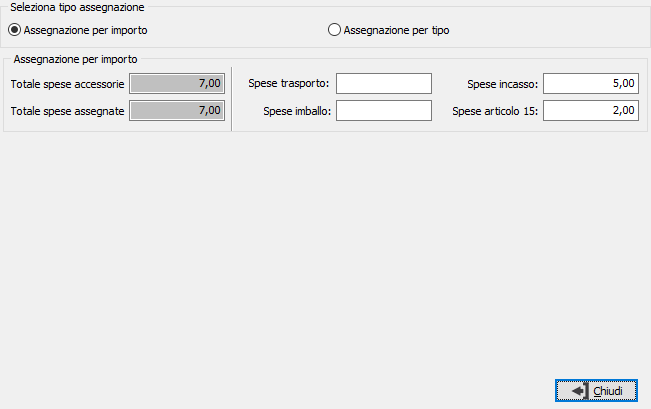
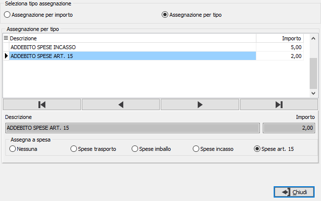

Acquisizione fatture da Box (acquisti/conto lavoro/prima
nota contabile)
A livello di gestione documenti
è stata introdotta la possibilità di acquisire una fattura nelle fatture
di acquisto e nelle fatture terzisti, in alternativa è possibile acquisire
i valori del documento direttamente in prima nota contabile quando si
registra un movimento di fattura di acquisto. Per quanto riguarda le fatture
di acquisto non sarà possibile acquisire direttamente la fattura in caso
si vada ad evadere un Ddt, ma sarà possibile associare le righe del documento
con le righe della fattura di acquisito per poterne assumere il prezzo.
 In prima nota contabile, in fase di inserimento movimento,
è possibile importare i documenti tramite l'apposito bottone che
visualizza l’elenco dei documenti precedentemente importati tramite “OS1BoxFatture
acquisti” ma non ancora importati in OS1.
In prima nota contabile, in fase di inserimento movimento,
è possibile importare i documenti tramite l'apposito bottone che
visualizza l’elenco dei documenti precedentemente importati tramite “OS1BoxFatture
acquisti” ma non ancora importati in OS1.
Nelle
fatture di acquisto del ciclo passivo e del conto lavoro è possibile effettuare
due tipologie di operazioni:
Importazione fattura: tramite questa operazione
è possibile importare la fattura acquisita senza evadere ordini/ddt. In fase di inserimento del documento fattura
di acquisto o fattura terzista è possibile importare i documenti tramite
l'apposito bottone presente nei dati generali del documento che visualizza
l’elenco dei documenti precedentemente importati tramite “OS1BoxFatture
acquisti” ma non ancora importati in OS1.

Assegnazione
prezzi e sconti su fattura: tramite questa operazione è possibile evadere
interattivamente ordini/ddt e successivamente assegnare prezzo e sconti
dal file XML acquisito.

La finestra richiamata dai documenti,
se attiva la gestione lotti e/o matricole e
in caso di importazione di un documento con file arricchito AssoSoftware
consente importare anche i lotti e le matricole se gestite sull’articolo
importato nella fattura di acquisto, attivando le relative caselle di
spunta vengono generati i codici lotti e matricole, se non presenti in
anagrafica di OS1.

Nell’elenco
vengono visualizzati tutti i documenti non ancora importati per fornitore/numero/data
documento, se indicati nella maschera di prima nota contabile o nei dati di testa della fattura, se tali dati non sono stati indicati,
vengono visualizzati tutti i documenti da importare. Tramite il bottone è
possibile visualizzare l’allegato della fattura se importato dal file
XML, sarà possibile visualizzare gli allegati anche dopo aver selezionato
la fattura tramite il bottone presente
nella sezione Iva del movimento contabile. Nell’elenco
vengono visualizzati con scritta rossa anche i documenti che in OS1BoxFatture
Acquisti sono stati chiusi manualmente.

Tramite il bottone Allegati
è
possibile visualizzare l’allegato o gli allegati della fattura se importato
dal file XML, altrimenti il bottone risulta disattivato; sarà possibile
visualizzare gli allegati anche dopo aver selezionato la fattura tramite
il bottone presente nei Dati generali del documento
e nella sezione
Iva del movimento contabile.
In prima
nota contabile confermando l’acquisizione del documento vengono importati
i dati della fattura, nel caso in cui per questo documento sia stata effettuata,
oltre l'acquisizione, anche la fase di preparazione vengono importati
tali dati, sia Iva che contabili, senza nessuna rielaborazione dei dati.
Nel caso in cui la fattura sia stata solo acquisita da OS1BoxFatture Acquisti,
vengono proposte le aliquote Iva e i conti contabili con lo stesso criterio
indicato nella fase di preparazione sulla scheda operativa di OS1BoxFatture
Acquisti.
Nei documenti
di acquisto/terzisti confermando l’acquisizione del documento vengono
importati i dati della fattura.
In
entrambi i casi Se si ricevono file XML che contengono le informazioni
aggiuntive previste dallo standard AssoSoftware la preparazione della
registrazione sarà sicuramente più completa, soprattutto per quanto riguarda
le righe dei documenti. Per i dettagli si rimanda alla relativa scheda
operativa.
La data del movimento contabile/documento
non dovrebbe essere inferiore alla data di ricezione del file XML, in
fase di salvataggio viene effettuato un controllo ed in caso di data non
corretta, viene segnalato a video l’errore, riportando la data di ricezione;
il controllo è configurabile tramite la configurazione di OS1BoxFatture
Acquisti.
Una volta importata la fattura in prima nota contabile
o nelle fatture di acquisto o terzisti non sarà più presente nell’elenco
delle fatture da importare.
Se per il documento importato sono presenti allegati
ed è gestita l’archiviazione con OS1FileStore, gli allegati verranno archiviati
e collegati al movimento/documento al momento del salvataggio definitivo.
Per i documenti è possibile utilizzare anche un'altra
metodologia relativa alla casistica di evasione interattiva ordini/ddt
che consente successivamente alla creazione delle righe di assegnare prezzo
e sconti dal file XML acquisito. In
fase di inserimento del documento, dopo aver evaso il documento di origine,
sulla maschera delle righe documenti si attiva il pulsante tramite cui viene visualizzato
l’elenco dei documenti acquisiti in OS1BoxFatture Acquisti per l’intestatario
del documento con lo stesso numero e data inseriti nei dati generali del
documento; il funzionamento è analogo a quanto indicato in precedenza.
Dopo
aver selezionato il documento per l’associazione delle righe della fattura
XML alle righe del documento generato compare la seguente finestra:

La finestra
è formata da tre sezioni:
Righe
fattura XML: vengono visualizzate le righe della fattura acquisita
sul Box
Righe documento
assegnate: la sezione contiene le righe del documento assegnate al
rigo della fattura su cui siamo posizionati nella sezione 1, nel caso
in cui gli articoli del documento coincidono con quelli della fattura
acquisita da OS1BoxFatture Acquisti, le righe vengono automaticamente
assegnate in tale sezione, per annullare l’associazione basta cliccare
sul rigo e il rigo viene spostato nella sezione delle righe da assegnare.
Righe documento da assegnare: la
sezione contiene le righe del documento che non risultano assegnate,
per associarle al rigo della fattura XML su cui siamo posizionati
sopra basta cliccare sul rigo e la riga del documento viene spostato
nella sezione delle righe assegnate.
Effettuando l’assegnazione il
rigo viene spostato nella sezione “Righe documento assegnate”: è possibile
associare alle righe della fattura acquisita sul Box uno o più righe documenti.
Eseguendo e confermando l’associazione
del documento vengono aggiornati i prezzi e gli sconti delle righe del
documento.
Premendo il pulsante Prosegui
senza effettuare nessuna assegnazione sarà possibile uscire dalla finestra
senza che nessuna modifica venga fatta a livello del documento, ma mantenedo
l'associazione al documento XML.
Se sulla fattura XML sono presenti righe relative
a spese accessorie (tipo AC) sarà presente il pulsante mostrato a lato
che consente di assegnare i valori delle spese accessorie ai campi spese
presenti sulla testa del documento di OS1 tramite due modalità:


Non è possibile utilizzare entrambe
le modalità ed in entrambi i casi se non viene assegnato tutto l'importo
relativo al totale delle spese viene dato un avviso e l'assegnazione delle
spese non avviene. L'assegnazione delle spese non viene salvata di conseguenza
se si accede nuovamente alla finestra di "Associazione dati fattura
XML" l'assegnazione delle spese deve essere effettuata nuovamente.
Alla chiusura della finestra principale con il pulsante Salva, se le spese
sono state assegnate correttamente, i valori delle spese per come assegnate
vengono inseriti nei relativi campi spesa del documento, che perdono gli
eventuali valori già assegnati in precedenza.